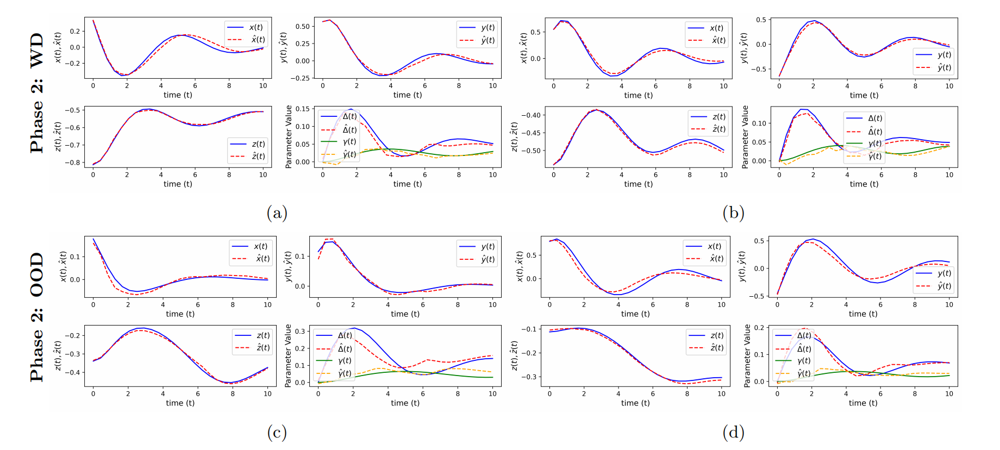
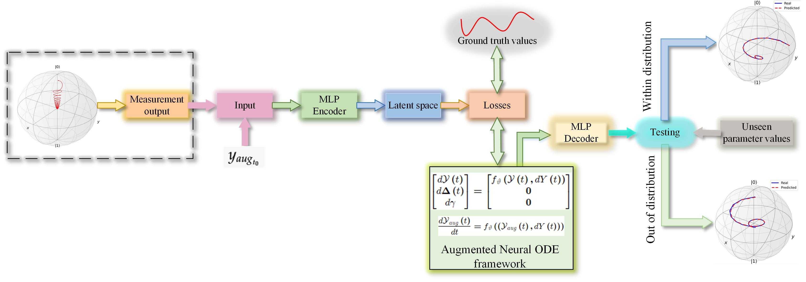
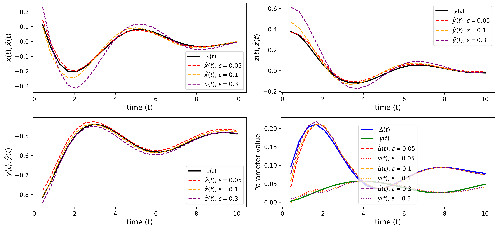
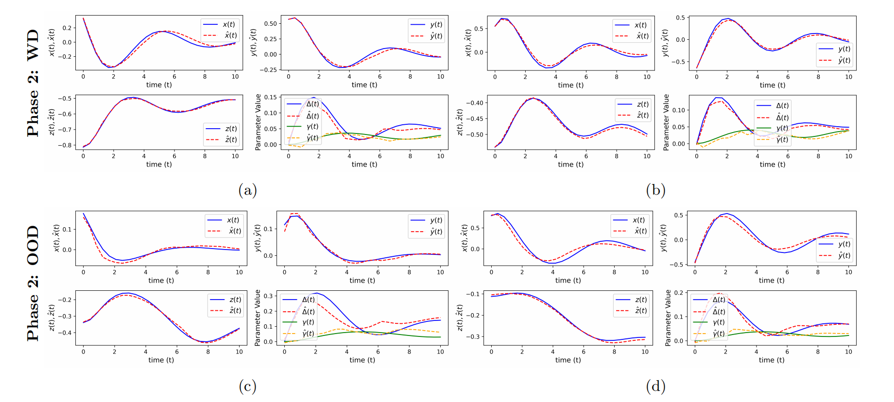
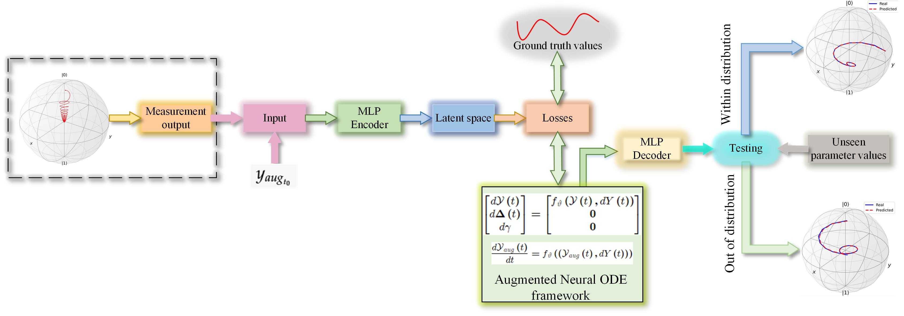
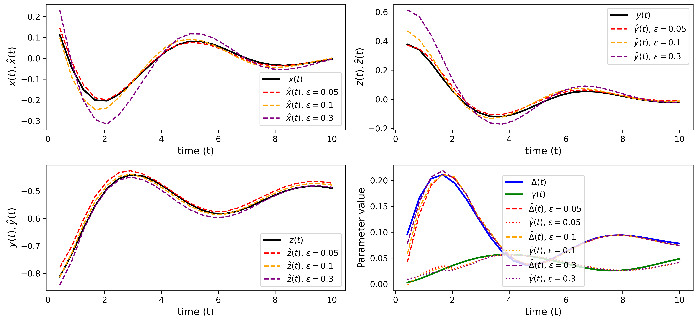

Background
I have always been deeply fascinated by the intersection of theory and computation in physics. My academic journey started with a Bachelor's degree in Physics from the University of the Punjab, Lahore, where I developed a strong foundation in theoretical and experimental physics. My undergraduate research focused on numerical modeling techniques, particularly using computational methods to analyze physical systems.
Building on this foundation, I pursued a Master of Science in Physics at Ludong University. During my Master's, I worked on condensed matter physics, Monte Carlo simulations, and stochastic processes. This experience deepened my interest in computational methods and their application to complex systems, including strongly correlated electron systems. I became particularly interested in the role of computational models in understanding emergent phenomena like superconductivity and magnetism.
Currently, as a PhD student at Harbin Institute of Technology, Shenzhen, I am focusing on altermagnetism in kagome lattices and the role of next-nearest-neighbor hopping in shaping magnetism and pairing in these systems. I use advanced computational techniques, including Monte Carlo simulations and quantum many-body methods, to study these phenomena. My research also extends into machine learning and neural networks, where I apply these tools to develop more efficient methods for simulating quantum systems and solving complex physical problems.

 




